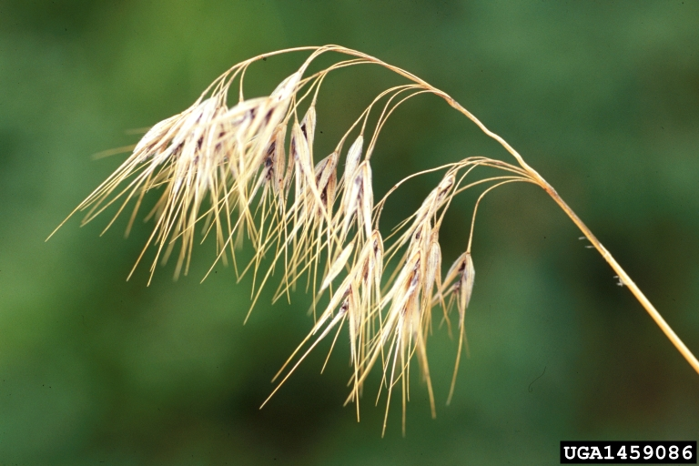

Modeling Fire Impacts in Western Shrublands
Note: Ths analysis is in progress and results are subject to change.
The western United States is no stranger to large wildfires, but drought conditions and climate change have made them increasingly common. As part of my time with the USGS we were contracted by the NPS to explore post-fire vegetation recovery dynamics across western landscapes.
Lava Beds National Monument
Lava Beds National Monument is a national park in Northern California. The dynamic landscape of the monument was shaped by volcanic activity, producing cinder cones, lava flows, and underground lava tubes. Vegetation at the monument ranges across a mild elevation gradient from shrublands dominated by sagebrush and grasses to juniper woodlands and ponderosa pine. The massive 2020 Caldwell Fire and the 2021 Antelope Fire burned nearly 95% of the monument, effectively burning all vegetation in certain areas.

At this site we were particularly interested in exploring how the fire influenced the population dynamics between the native sagebrush and invasive cheatgrass in the park.
Cheatgrass and fire
The introduction of cheatgrass to the western United States in the early 20th century drastically altered vegetation composition and fire regimes. As early as 1938 cheatgrass was described at Lava Beds as “Extremely abundant almost all over the entire region.” Cheatgrass quickly fills in the gaps between native vegetation, and dries early in the season, providing a fast continuous source of fire fuel. It also recovers from fire extremely quickly. Together this creates a dynamic where cheatgrass can begin to outcompete local vegetation. It catches fire, burning all surrounding vegetation as well, but then recovers much faster, allowing it to outcompete other species. For these reasons cheatgrass is considered a pest and a threat to local wildlife species that rely on native habitats.

Before the fires, the sagebrush ecosystem in Lava Beds national monument was considered to be one of the best in the western United States. However, after the fire there was uncertainty about how these populations had been effected at landscape scale, and about whether or not there was evidence of regime change.
Our approach
Field Data
The approach we took to answering these questions involved creating a prediction model using Sentinel-2 imagery that could estimate the percent land cover of sagebrush and and cheatgrass across the landscape and backwards in time. Doing this well would require a large amount of high quality field data. Luckily, the different agencies that make up the department of the interior have a long history of field data collected at established plots within the park. These data programs, along with additional field data collected by the USGS for this project, are what made building this kind of model a possibility.
After collecting and processing available field data, we had a total of 309 field observations to use to train and validate our model.
Spectral data
As mentioned previously, we elected to use Sentinel-2 imagery to inform our vegetation model. In order to capture the unique variations in phenological signals between target species across seasons and improve prediction accuracy, I used temporal compositing approach to image processing. For each year in which field data was available, we used google earth engine to retrieve all available Sentinel-2 imagery and process it into four seasonal median composites. So, for a given year we would have a composite of spring imagery, a composite of summer imagery, etc. After temporal compositing, we used the resulting imagery to calculate several vegetation indices. This was very much a data-forward approach to modeling, so we weren’t shy in selecting indices. As an additional predictor, we also included a max-min difference raster for each index, where each pixel value is calculated as the difference between maximum and minimum values across all seasons for that index. Generating these indices for each season results in fifty predictors for each Sentinel-2 pixel.

Model training and validation
Model training and validation was all completed in R using the randomforest package. We trained and validated models predicting percent sagebrush cover, percent cheat g rass cover, and percent bare earth cover, each as continuous variables. Model validation was performed using a leave-one-out approach to cross validation. To determine the accuracy of the continuous models we assess the cross-validated Root Mean Squared-Error (RMSE), normalized RMSE, and correlation statistics. The resulting models were accurate enough to continue our analysis, with our sagebrush model reporting an RMSE of 6%, and our cheatgrass model reporting an RMSE of 13%. Below is a plot of the observed and predicted values represented as a density plot, making it easy to see how the model is performing with both vegetation types. (ARTR is sagebrush, BRTE is cheatgrass.)

Sagebrush impacts
Once our model was trained, we could use it to generate a time series of predicted land cover amounts through time. We could then use this time series to compare what the landscape looked like before and after the fire.
Here is a map showing the percent of sagebrush cover lost due to the fire. Our models predicted a 52% total loss of sagebrush across the park. Cheatgrass, meanwhile, was thriving in the monument after the fire. Our analysis found that much of the northern and central areas of the monument displayed a substantial increase in cheatgrass one year after the fire. We can easily see these differences by comparing our predicted vegetation density distributions from before the fire to after the fire.


Interestingly, these resulting maps showed an interesting pattern where the actual lava features seemed to be unaffected by the fires. You can see these features clearly on the cheatgrass map. While not as dense as in other areas, our field analysis had confirmed the presence of sagebrush on these features. This made us curious as to whether or not the lava features had acted as a refuge for these species against the fire.
To test for this we pulled in some soil data from the department of agriculture. These soil units are helpful because the lava features are clearly delineated and labeled. Using a bivariate chloropleth map we can observe which soil units displayed low or high amounts of pre-fire cheatgrass, as well as which had low or high amounts of sagebrush loss.

Sure enough, the lava features had both low amounts of pre-fire cheatgrass, and also displayed low levels of sagebrush loss, providing evidence that the lava features at the park protected sagebrush populations from the fire by acting as a natural fire break.